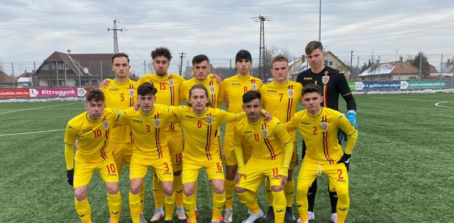

DAVID MORAR ŞI EDUARD RUSU AU EVOLUAT PENTRU ROMÂNIA U17 ÎN VICTORIA CU 2-1 ÎMPOTRIVA UNGARIEI U17
FEBRUARIE 18, 2021
- David Morar şi Eduard Rusu au făcut parte din lotul României U17 pentru partida amicală, de la Gyula, în compania Ungariei U17. David Morar a început meciul ca titular, în timp ce Eduard Rusu a intrat în minutul 72. România s-a impus cu 2-1.
Gabriel Fulga a deschis scorul în minutul 30. În minutul 57, România şi-a majorat avantul după ce Bence Szabó a marcat în propria poartă. Scorul final a fost stabilit în minutul 67, după reuşita lui László Pekár.
- A fost un meci greu. Un adversar puternic. Nu e prima dată când sunt convocat. Este un sentiment minunat să îmbraci tricoul echipei naţionale. Emoţia este mai profundă când se aude imnul naţional şi eşti acolo, pe teren. Este un pas important.
Cred că pentru orice fotbalist contează să fie la naţională. Fiecare meci m-a motivat şi imi doresc să ajung şi la naţionala mare – Eduard Rusu, mijlocaş Academica Clinceni şi România U17
- David Morar a fost convocat în premieră la o acţiune a echipei naţionale.
- Să îmbraci tricoul naţionalei este o mândrie pentru orice fotbalist, iar pentru mine momentul a fost unul special. Este un pas important in cariera mea. Stafful şi coechipierii au fost foarte primitori, şi toată lumea e cu gândul doar la performanţă.
Sunt determinat să dau tot ce am mai bun pentru a dovedi că merit să fiu convocat şi la următoarele acţiuni. Meciul cu Ungaria a fost dificil. Timpul pentru pregătirea partidei a fost unul foarte scurt. Am reuşit, totuşi, să adoptăm o
strategie eficientă pe care am aplicat-o cu succes în timpul jocului. Am constatat că reprezentativa Ungariei este foarte omogenă, cu un stil de joc agresiv, însa calitatea şi organizarea noastră s-au dovedit superioare în final –
David
Morar, atacant Academica Clinceni şi România U17